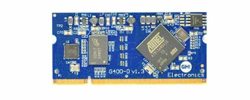
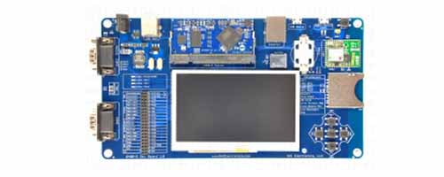

G400D

Overview
The G400D System on Module (SoM) is a 400 MHz ARM9. It is made just for running .NET Micro Framework.
Tip
Not recommended for new designs, consider SITCore System on Chip.
Ordering Part Number
- G400D SoM: G400D-SM-400
Specifications
| Spec | Value |
|---|---|
| Processor | Atmel AT91SAM9X35 ARM 926 |
| Speed | 400 MHz |
| Internal RAM | 32 KByte (SRAM) |
| Internal Flash | 0 KByte |
| External RAM | 128 MByte (DDR2 SDRAM) |
| External Flash | 4 MByte (SPI) |
| Dimensions | 67.7 x 31.9 x 5.0 mm |
Note: Resources are shared between your application and the operating system.
Peripherals
This table lists the available peripherals. The "overall" column shows the available pins if the design did not follow the UCM standard.
| Peripheral | UCM Standard | Overall |
|---|---|---|
| UART | 1 | 5 (including HS) |
| UART HS | 1 | 1 |
| I2C | 1 | 1 |
| SPI | 1 | 1 |
| CAN | 1 | 2 |
| SDIO | 1 | 1 |
| ADC | 8 | 8 |
| PWM | 4 | 4 |
| GPIO | 12 | 70 |
| IRQ | 4 | 70 |
| USB Client | Supported | Supported |
| USB Host | 1 | 2 |
| LCD | Supported (16bpp) | Supported (16bpp) |
| Ethernet PHY | Supported | Supported |
| WiFi | Not supported | Not supported |
| DCMI | Not supported | Not supported |
| VBAT | Supported | Supported |
| JTAG | Full JTAG | Full JTAG |
Development Options

The UCM development options can greatly simplify the process of building a product or prototype using the UC5550. Options include a development board and displays which can get you programming in minutes.
.NET Micro Framework (NETMF)
The NETMF software on G400 is mature and complete. For more information on NETMF you can go to the NETMF Introduction page. The NETMF Getting Started page covers NETMF from setup of the host computer to program deployment on both an emulator and target device.
Bootloader v1 is needed for G400 to work with NETMF. It is available in the NETMF SDK.
Loading Bootloader
Download the G400 bootloader file and load onto the dataflash using the Microchip (Atmel) SAM-BA tool and the following instructions.
To set the chip in SAM-BA mode, hold down the dedicated button on your board (SYS A on UCM Dev and Breakout boards) while the system powers up (or during reset). If there is no such button, connect G400D pin SPI1_MISO to ground. Keep the button pressed (pin grounded) for three seconds after power up or reset, then release the pin. The device manager will show a COM port similar to "Bossa Program Port" or "GPS Detect".
- If it is not already installed, download and install the SAM-BA tool from Microchip. The latest version we have tested is 2.18 for Windows. (The tool may not show correctly. Try to make the window larger to see all hidden buttons!)
- Open the SAM-BA program then select the COM port for your device in the connection box and your board type below it (at91sam9x35-ek for G400), then click connect.
- Near the middle of the window, go to the
DataFlash AT45DB/DCBtab. - Under
Scripts, selectEnable Dataflash (SPI0 CS0)then click theExecutebutton. - Under
Scripts, selectErase Allthen clickExecute. This will take some time to complete. It seems that if SAM-BA loses focus during the erase procedure it can seem to lock up. We recommend that once you click theExecutebutton you leave the computer alone until the erase procedure is completed. - Under
Scripts, selectSend Boot File, click execute, then browse to and select the bootloader for the device. - Once the transfer finishes, go to
File>Quitand then reset the board. Make sure to properly quit the program or connection errors may result on subsequent uses. - Now reset the board. Congratulations, your board is now running the loaded program!
Loading the Firmware
- Activate the bootloader, hold the LDR0 signal (SYS B) low while resetting the board.
- Open the FEZ Config tool and follow the instructions.
You can also update the firmware manually. Download the firmware and learn how to use the GHI Electronics Bootloader manually.
Start Coding
Now that you have installed the bootloader and firmware, you can setup your host computer and start programming. Go to the NETMF Getting Started page for instructions.
Datasheet
This documentation page replaced the legacy datasheet PDF but it is here for reference.
G400D Pinout
Many signals on the G400D are multiplexed to offer multiple functions on a single pin. Developers can decide on the pin functionality to be used through the provided libraries. Any pin with no name, function, or note must be left unconnected.

UCM Pinout
| SO-DIMM Pin | UCM Standard | Function Name |
|---|---|---|
| 1 | AGND | GND |
| 2 | Ethernet TX- | ETH PHY TX- |
| 3 | Module Specific 1 | |
| 4 | Ethernet TX+ | ETH PHY TX+ |
| 5 | Analog VREF- | GND |
| 6 | Ethernet RX- | ETH PHY RX- |
| 7 | Reserved | |
| 8 | Ethernet RX+ | ETH PHY RX+ |
| 9 | Reserved | |
| 10 | Indicator A | ETH PHY LED SPEED |
| 11 | Indicator B | ETH PHY LED LINK |
| 12 | Reserved | |
| 13 | GND | GND |
| 14 | DCMI D0 | |
| 15 | DCMI D1 | |
| 16 | DCMI D2 | |
| 17 | DCMI D3 | |
| 18 | DCMI D4 | |
| 19 | DCMI D5 | |
| 20 | Analog 3.3V | 3.3V |
| 21 | DCMI D6 | |
| 22 | DCMI D7 | |
| 23 | DCMI VSYNC | |
| 24 | DCMI HSYNC | |
| 25 | DCMI PIXCLK | |
| 26 | DCMI XCLK | |
| 27 | GND | GND |
| 28 | PWM E | |
| 29 | PWM F | |
| 30 | PWM G | |
| 31 | PWM H | |
| 32 | Analog VREF+ | 3.3V |
| 33 | Reserved | |
| 34 | 5V | |
| 35 | Module Specific 4 | PB3 |
| 36 | Module Specific 5 | PB4 (DNP) |
| 37 | Module Specific 6 | PB5 |
| 38 | Module Specific 7 | PB6 |
| 39 | Module Specific 8 | PB7 |
| 40 | GND | GND |
| 41 | GND | GND |
| 42 | LCD 24bpp R0 | |
| 43 | LCD 24bpp R1 | |
| 44 | LCD 24bpp R2 | |
| 45 | LCD 24bpp G0 | |
| 46 | 3.3V | 3.3V |
| 47 | LCD 24bpp G1 | |
| 48 | LCD 24bpp B0 | |
| 49 | LCD 24bpp B1 | |
| 50 | LCD 24bpp B2 | |
| 51 | GND | GND |
| 52 | Module Specific 9 | PB1 |
| 53 | Reserved | |
| 54 | Reserved | |
| 55 | Reserved | |
| 56 | 5V | |
| 57 | IRQ A | PD18 |
| 58 | IRQ B | PD17 |
| 59 | IRQ C | PD16 |
| 60 | 3.3V | 3.3V |
| 61 | IRQ D | PD15 |
| 62 | GPIO A | PD14 |
| 63 | GPIO B | PD13 |
| 64 | GPIO C | PD12 |
| 65 | GND | GND |
| 66 | GPIO D | PD11 |
| 67 | GPIO E | PD10 |
| 68 | GPIO F | PD9 |
| 69 | GPIO G | PD8 |
| 70 | 5V | |
| 71 | Reserved | |
| 72 | 3.3V | 3.3V |
| 73 | I2C B SDA | |
| 74 | I2C B SCL | |
| 75 | UART C TX | |
| 76 | UART C RX | |
| 77 | UART D TX | |
| 78 | UART D RX | |
| 79 | GND | GND |
| 80 | Reserved | |
| 81 | Reserved | |
| 82 | Reserved | |
| 83 | Reserved | |
| 84 | Reserved | |
| 85 | Reserved | |
| 86 | 5V | |
| 87 | USB Device ID | |
| 88 | 3.3V | 3.3V |
| 89 | UART B TX | |
| 90 | UART B RX | |
| 91 | ADC A | PB8, ADC9 |
| 92 | GPIO H | PD2 |
| 93 | SPI B MISO | |
| 94 | SPI B MOSI | |
| 95 | GND | GND |
| 96 | SPI B SCK | |
| 97 | ADC B | PB11, ADC0 |
| 98 | CAN A TD | PA5, UART3 TX, CAN2 TX |
| 99 | CAN A RD | PA6, UART3 RX, CAN2 RX |
| 100 | CAN B TD | |
| 101 | CAN B RD | |
| 102 | UART HS A TX | PA0, UART2 TX |
| 103 | UART HS A RX | PA1, UART2 RX |
| 104 | ADC C | PB12, ADC1 |
| 105 | PWM A | PC18, PWM0 |
| 106 | 3.3V | 3.3V |
| 107 | SYS A | SPI1 MISO |
| 108 | Module Specific 2 | SPI1 MOSI |
| 109 | Module Specific 3 | SPI1 SCK |
| 110 | ADC D | PB17, ADC6 |
| 111 | SYS C | PA4, LDR1 |
| 112 | PWM B | PC19, PWM1 |
| 113 | GND | GND |
| 114 | ADC E | PB16, ADC5 |
| 115 | I2C A SDA | PA30, I2C SDA |
| 116 | I2C A SCL | PA31, I2C SCL |
| 117 | UART A RX | PA9, UART1 RX, CAN1 RX |
| 118 | UART A TX | PA10, UART1 TX, CAN1 TX |
| 119 | GPIO I | PC24 |
| 120 | UART HS A RTS | PA2, UART2 RTS |
| 121 | UART HS A CTS | PA3, UART2 CTS |
| 122 | GPIO J | PD7 |
| 123 | SD Card D0 | PA15, SD D0 |
| 124 | 3.3V | 3.3V |
| 125 | SD Card CMD | PA16, SD CMD |
| 126 | SD Card CLK | PA17, SD CLK |
| 127 | SD Card D1 | PA18, SD D1 |
| 128 | SD Card D2 | PA19, SD D2 |
| 129 | SD Card D3 | PA20, SD D3 |
| 130 | PWM C | PC21, PWM3 |
| 131 | GND | GND |
| 132 | GPIO K | PC26 |
| 133 | PWM D | PC20, PWM2 |
| 134 | SYS B | PA24, LDR0 |
| 135 | SYS D | PA25, MODE |
| 136 | GPIO L | PA26 |
| 137 | Module Specific 10 | PA27 |
| 138 | UART HS B RTS | |
| 139 | UART HS B CTS | |
| 140 | UART HS B TX | PC16, UART6 TX |
| 141 | UART HS B RX | PC17, UART6 RX |
| 142 | 3.3V | 3.3V |
| 143 | LCD VSYNC | PC27, LCD VSYNC |
| 144 | LCD HSYNC | PC28, LCD HSYNC |
| 145 | LCD CLK | PC30, LCD CLK |
| 146 | LCD DE | PC29, LCD DE |
| 147 | Module Specific 11 | PD3 |
| 148 | SD Card CD | PD4 |
| 149 | Module Specific 12 | PD5 |
| 150 | Reserved | |
| 151 | GND | GND |
| 152 | LCD B3 | PC0, LCD B3 |
| 153 | LCD B4 | PC1, LCD B4 |
| 154 | LCD B5 | PC2, LCD B5 |
| 155 | LCD B6 | PC3, LCD B6 |
| 156 | LCD B7 | PC4, LCD B7 |
| 157 | ADC F | PB13, ADC2 |
| 158 | ADC G | PB14, ADC3 |
| 159 | ADC H | PB15, ADC4 |
| 160 | 3.3V | 3.3V |
| 161 | LCD G2 | PC5, LCD G2 |
| 162 | LCD G3 | PC6, LCD G3 |
| 163 | LCD G4 | PC7, LCD G4 |
| 164 | LCD G5 | PC8, LCD G5, UART5 TX |
| 165 | LCD G6 | PC9, LCD G6, UART5 RX |
| 166 | Module Specific 13 | PD1 |
| 167 | Indicator C | PA8, UART4 RX |
| 168 | LCD R7 | PC15, LCD R7 |
| 169 | GND | GND |
| 170 | LCD G7 | PC10, LCD G7 |
| 171 | LCD R3 | PC11, LCD R3 |
| 172 | LCD R4 | PC12, LCD R4 |
| 173 | LCD R5 | PC13, LCD R5 |
| 174 | LCD R6 | PC14, LCD R6 |
| 175 | SPI A SCK | PA23, SPI2 SCK |
| 176 | SPI A MISO | PA21, SPI2 MISO |
| 177 | Module Specific 14 | WKUP |
| 178 | SPI A MOSI | PA22, SPI2 MOSI |
| 179 | Module Specific 15 | SHDN |
| 180 | 3.3V | 3.3V |
| 181 | Module Specific 16 | PWR EN |
| 182 | Module Specific 17 | USB H2+ |
| 183 | VBAT | VBAT |
| 184 | Module Specific 18 | USB H2- |
| 185 | GND | GND |
| 186 | GND | GND |
| 187 | RESET | RESET |
| 188 | USB Host D+ | USB H1+ |
| 189 | JTAG RTCK | RTCK |
| 190 | USB Host D- | USB H1- |
| 191 | JTAG TDO | TDO |
| 192 | 3.3V | 3.3V |
| 193 | JTAG NTRST | NTRST |
| 194 | USB Device D+ | USB D+ |
| 195 | JTAG TDI | TDI |
| 196 | USB Device D- | USB D- |
| 197 | JTAG TCK (SWCLK) | TCK |
| 198 | GND | GND |
| 199 | JTAG TMS (SWDIO) | TMS |
| 200 | Indicator D | PA7, UART4 TX |
CAN Bit Timing Settings
The following CAN bit timing parameters were calculated for a G400 driving the SN65HVD230 CAN driver chip. See the CAN Tutorial for more information.
| Baud | Propagation | Phase1 | Phase2 | Baudrate Prescaler | Synchronization Jump Width | Use Multi Bit Sampling | Sample Point | Max Osc. Tolerance | Max Cable Length |
|---|---|---|---|---|---|---|---|---|---|
| 83.333K | 7 | 4 | 1 | 99 | 0 | False | 87.5% | 0.31% | 845M |
| 125K | 7 | 1 | 1 | 81 | 0 | False | 84.6% | 0.38% | 499M |
| 250K | 7 | 1 | 1 | 40 | 0 | False | 84.6% | 0.38% | 222M |
| 500K | 7 | 7 | 1 | 13 | 1 | False | 89.5% | 0.41% | 92M |
| 1M | 7 | 7 | 1 | 6 | 1 | False | 89.5% | 0.41% | 19M |
Note: Maximum Oscillator Tolerance and Maximum Cable Length are theoretical maximums and must be tested to ensure reliability.
G400 Development Board

This is no longer in production, replaced by the Development Options
Want to quickly build your prototype? Check out the UCM Development Options.
You can also visit our main website at www.ghielectronics.com and our community forums at forums.ghielectronics.com.